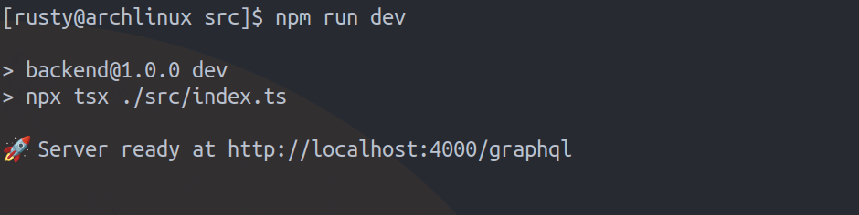

Yesterday, I tried running a TypeScript file in Node.js
directly, but I got an error. Node.js didn’t know what to do
with the .ts file. This was the error I got:
After few hours of googling, I found a package called tsx that can run TypeScript files in Node.js without needing to compile them first.
First, install TSX by running this command:
npm install tsx --save-dev
To make it work, I added this line to the
scripts section in my package.json:
"dev": "npx tsx ./src/index.ts"Then, I ran:
npm run devThis worked! My TypeScript code ran without errors. Here’s what it looked like after using tsx:
tsx makes it easy to run TypeScript in Node.js. If you want to learn more, check the tsx documentation.
Now I can run TypeScript files directly in Node.js without any issues!